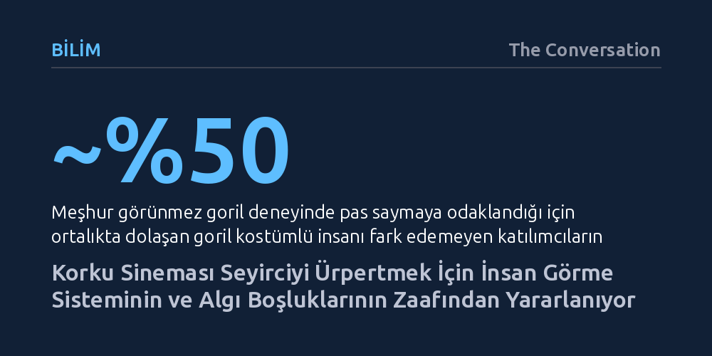

BILIM · The Conversation · 2026-10-21
Korku filmleri, insan beyninin gördüğü her ayrıntıyı işleyememesinden faydalanarak dikkatsizlik körlüğü ve çevresel algı gecikmesi gibi biyolojik zaafları etkili birer korku aracına dönüştürüyor. Yönetmenler, görme sistemimizin tehdit algılama açıklarını ve bakış reflekslerini manipüle ederek dehşet hissini katlıyor.
Korku filmlerinde hissettiğimiz tekinsizliğin ardında ucuz numaralar değil, beynimizin görsel bilgiyi işleme ve tehdit algılama sürecindeki evrimsel sınırlarının yattığını gösteriyor.

Ari Aster'in 2018 yapımı Hereditary filmini sinemada izleyenlerin çoğu, ana karakter Peter evde dolaşırken salondaki diğer izleyicilerin neden dehşetle nefesini tuttuğunu ilk anda anlayamaz. Kamera Peter'a odaklanmışken gerilim tırmanır; ardından kadraj yavaşça genişlediğinde tüyler ürpertici gerçek ortaya çıkar: Peter'ın cinnet geçirmiş annesi Annie, sahnenin başından beri tavanda çarpık bir biçimde asılı durmakta ve oğlunu izlemektedir. Aslında Annie bütün o süre boyunca göz önündedir; fakat seyircilerin büyük kısmı onu ancak kamera belirgin biçimde geri çekildiğinde fark eder.
Bilişsel psikoloji alanında yapılan araştırmalar, insan görsel sisteminin bir sahnedeki tüm ayrıntıları aynı anda işleyemeyeceğini gösteriyor. Ayrıntılı bilgi yalnızca dikkatin odaklandığı dar alandan toplanabilir; bu projektör ışığının dışında kalan her şey, ne kadar sıra dışı olursa olsun kolayca gözden kaçar. Psikolojide 'dikkatsizlik körlüğü' olarak adlandırılan bu olgu, insanların pas sayarken sahne ortasından geçen goril kostümlü kişiyi görememesiyle kanıtlanmıştır. Insidious filmindeki hayalet çocuktan The Haunting of Hill House dizisinin arka planına gizlenmiş onlarca ruha kadar korku sineması, bu algı açığından sıkça beslenir.
Bir diğer güçlü algısal zaaf ise 'değişim körlüğü'dür; yani doğrudan gözümüzün önünde gerçekleşen köklü bir başkalaşımı dahi fark edememe durumu. The Conjuring 2 filminde röportaj yapılan genç kızın kadrajın arka planında hafif bulanık dururken yavaşça yaşlı bir adama dönüşmesi ve ardından aniden eski haline gelmesi bunun çarpıcı bir örneğidir. Yönetmenler dikkatin sınırlarını çok iyi bildikleri için korkutucu unsurları gözümüzün önünden saklamak zorunda kalmaz; yalnızca dikkatimizi başka bir noktaya çekmeleri yeterlidir.
Korku yönetmenleri sadece sahneleri gizlemekle kalmaz, seyircinin bakışını tam istedikleri noktaya kanalize ederek gerilimi tırmandırır. Bunun en yaygın kurgu tekniklerinden biri bakış açısı eşlemesidir. Örneğin The Conjuring filminde bir kız çocuğu yatakta aniden doğrulup dehşet dolu gözlerini yukarıya diktiğinde, kamera bir sonraki kesmede gardırobun tepesindeki tekinsiz varlığı gösterir. Seyirci, karakterin baktığı yere bakmaya neredeyse biyolojik bir zorunlulukla sürüklenir.
Bu sinematografik tercihin temelinde psikologların 'bakış yönlendirme' dediği evrimsel bir refleks yatar. Çevremizdeki bir insanın gözleri aniden belirli bir yöne kilitlendiğinde, görme sistemimiz düşünmeksizin o noktaya döner; zira vahşi doğada bir başkasının fark ettiği tehlikeyi anında görmek hayatta kalma meselesidir. Kurgucular bu refleksi perdeye taşıdığında, karakterin dehşetine anında ortak olur ve karakterin gördüğü şeyle yüzleşene dek yoğun bir beklenti gerilimi yaşarız.
Kimi zamansa yönetmenler tam tersi bir strateji izleyerek izleyiciye takip edecek hiçbir odak noktası vermez. It Follows filminin açılış sahnesinde, panik içinde evine girip çıkan genç kızı gösteren geniş açılı bir plan kullanılır. Seyircinin bakışını yönlendirecek hiçbir kesme veya bakış ipucu bulunmadığından, zihin otomatik olarak görsel arama moduna geçer. Gözlerimiz ekranın her bir köşesini tarar; tehlikenin nereden geleceğini bilmemenin yarattığı belirsizlik, doğrudan bir canavarla karşılaşmaktan çok daha sarsıcı bir tekinsizlik üretir.
Görme sistemimiz homojen bir bütün olarak çalışmaz. Retinamızın merkezindeki fovea adı verilen küçücük çukurcuk, yüksek yoğunluktaki koni fotoreseptörleri sayesinde ince detayları ve renkleri net bir şekilde ayırt etmemizi sağlar. Buna karşılık görüş alanımızın kenarlarını oluşturan çevresel sistem ayrıntı ve renkten yoksundur; ancak hareketi ve ani ışık değişimlerini foveadan çok daha hızlı algılar.
Görüş alanımızın kıyısında bir kıpırtı belirdiğinde, çevresel sistem tehlike alarmını anında çalar. Gözlerimiz hedefi tanıyabilmek için sakkad adı verilen ani ve istemsiz bir sıçrama hareketiyle foveayı o noktaya odaklar. İşte korku sinemasının en ustaca işlediği zemin tam olarak burasıdır: Beynin bir hareketi tespit etmesi ile o hareketin ne olduğunu anlaması arasında daima milisaniyelik bir gecikme vardır.
Koridor ya da ayna sahnelerinde arkadan hızla geçen bir gölgenin yarattığı ürperti, bu algısal uçurumdan kaynaklanır. Bir hareketin varlığı sinir sistemimize kaydedilmiştir fakat kimliği henüz belirsizdir. Seyirci neyle karşı karşıya olduğunu anlayana kadar geçen o kısacık belirsizlik anı, biyolojik düzeyde derin bir tedirginlik ve savunmasızlık hissi uyandırır.
İnsan beyni, rastgele desenlerde veya anlamsız şekillerde bile insan yüzü görmeye derin bir genetik eğilim duyar; bu duruma pareidolia denir. Perdelerin kıvrımlarında, bir ağaç gövdesinde ya da nesnelerde yüz görmemiz bir tesadüf değildir. İnsan türü avcıların ve düşmanların kol gezdiği vahşi bir doğada evrimleştiği için, çevredeki gizlenmiş bir tehdidi anında fark etmek ölüm kalım meselesiydi.
Evrimsel hata yönetimi teorisine göre, ortada bir tehdit yokken sahte bir yüz ya da silüet algılamak zararsız bir yanılgıdır; ancak çalıların ardında gizlenen gerçek bir avcıyı fark edememenin bedeli ölümdür. Bu nedenle beynimiz güvenli tarafta kalmak adına en ufak bir ipucunu dahi yüz veya figür olarak yorumlamaya programlanmıştır. Yazıda da belirtildiği gibi, "gerçek bir yüzü kaçırmanın maliyeti sahte bir yüz algılamaktan çok daha fazladır."
Korku yönetmenleri bu evrimsel refleksi de kusursuz bir silaha dönüştürür. Ari Aster'in Midsommar filminde karakter taşınırken ağaç dallarının arasına gizlenen yüz hatları, The Night House filminde evin mimari çizgilerinin birleşip insan silüetine bürünmesi ya da 1963 yapımı The Haunting klasiğinde duvar kâğıdı desenlerinin tekinsiz bir çehreye dönüşmesi hep aynı psikolojik mekanizmayı tetikler. Seyirci, algılama ile tanıma arasındaki o tekinsiz boşlukta kendi zihninin ürettiği kurgularla baş başa kalarak dehşete kapılır.